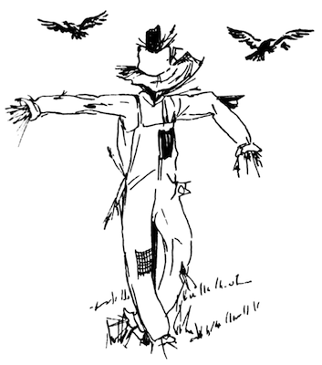

May 3, 2013
In tech I often see people start tackling a problem before developing a solid and complete understanding of the problem’s scope, nature or even root cause. What you end up with is a “solution” that’s quite different from what you would have designed had you taken the time to think things through up front. And it’s not just in tech. There are plenty of real world examples.
I once worked downtown in a building that was deemed to have a bird problem. The agency’s solution was to buy a system that used speakers to play sounds like that of the birds’ predator. You know, to scare the birds away. Well, this solution did two things. First, instead of having bird poop the area has fake bird noise. Second, the birds have moved down the street to the another agency’s building.
It almost goes without saying that pushing a problem around isn’t much of a solution. And between the fake cawing and the harping from Agency 2 down the street I’m not sure how much better off Agency 1 is. Furthermore, what’s Agency 2 to do? Buy the same speaker system? And when the birds move to Agency 3 they’re to do the same?
If this agency or agencies had taken a larger or longer view of their problem they might have come up with a better solutions than the speakers. What if they had, hypothetically, studied the birds’ activity? They might have found, again hypothetically, that the birds came for the fruit or nut of a certain tree. Remove that one tree and the bird problem is solved for all.
What I like the most about the tree solution is that it solves a problem by removing a piece of a complex system, rather than adding yet another piece.

I hear from my friends who work at Agency 1 that, in the end, the birds grew used to the noise of the fake predator and have now come back. And in case you thought I could be making this up, here’s a daily dose of bird poop.